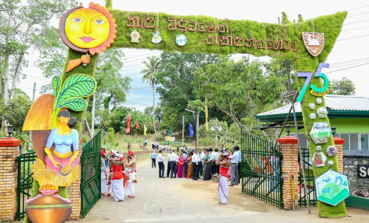
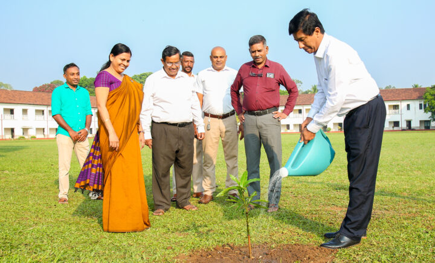

75th Anniversary of Sri Lanka Agricultural College
For the 75th anniversary of Kundasale Sri Lanka School of Agriculture, a series of programs were held with the support of the Department of Agriculture, Extension and Training Center and Kundasale School of Agriculture Alumni Association. With parallel to the 75th anniversary celebration, Kundasale Sri Lanka School of Agriculture organized and conducted a Pirith Chanting ceremony, a blood donation program, an inter-school cricket tournament, and a Kandy district inter-college agricultural knowledge based quiz competition. As the last stage of this series of programs, an educational and trade exhibition was held on August 04, 05 and 06 and its opening ceremony was held on 04.08.2023 in a grand manner.
Honorable Minister of Agriculture Mr. Mahinda Amaraweera, Minister of State for Animal Husbandry Mr. D.B. Herath and other distinguished guests were participated on the invitation of Director General of Agriculture, Ms. P. Malathy. For this special occasion, Director General of Agriculture Ms. P. Malathy, Additional Director Generals of the Department of Agriculture, Chief Financial Officer, Directors, Additional Directors and a large number of officials of the Department of Agriculture, other departments, private sector were participated and members of the Kundasale Agricultural school Adi Vidyartheen’s Association also participated.
After welcoming the Hon’ble Minister of Agriculture Mahinda Amaraweera, the 75th anniversary plaque was unveiled, after which the guests including the Hon’ble Minister went on an observation tour of the exhibition grounds. As a leading institution in agricultural education, Kundasale Sri Lanka school of Agriculture had prepared various exhibition areas and booths throughout the exhibition grounds to improve the knowledge and technology required for agricultural education of farmers, students studying agricultural courses and school students.
Also, through the trade exhibition booths prepared for the public, awareness about various agricultural products and the possibility of buying agricultural inputs, high quality plants, agricultural equipment and agricultural machinery was facilitated.
More than a thousand people participated in the opening ceremony which was held in a special pavilion prepared in the playground and the winners of the Inter-Agricultural school Cricket Tournament and Kandy District’s Inter-School Agricultural quiz competition held in parallel with the 75th anniversary were awarded by the Hon’ble Minister of Agriculture.
A special function of this event was to organize a teacher’s award for the principals and lecturers who worked with great dedication to produce thousands of diploma holders for the agriculture sector.
Nearly tens of thousands of people including farmers, government and private sector officials, school students and students studying other agriculture courses participated to watch this educational and trade exhibition which lasted for 03 days with the theme of “Technology for tomorrow from schools of Agriculture”.

Consultative workshop on Millet Development in Sri Lanka
Paralel to the International Year of Millet 2023, the Sri Lankan millet workshop organized jointly by the Sri Lankan Department of Agriculture and the Sri Lankan Indian Assistant Commissioner’s Office on 28.07.2023 at the Plant Genetic Resurce Development Center of the Department of Agriculture, with the participation of the the Director General of Agriculture Miss P. Malathi.
A group of officials from Indian Assistant High Commission of Sri Lanka, including Dr. S. Athira, Assistant Commissioner, officials from various institutions of the Department of Agriculture, representatives of universities, private sector institutions and a group of grain crop growers participated in this event.
During the technical session, experties of Sri Lanka and India awered the audience by presenting many technical details related to millet crops..

Farmers Day and Agricultural Fair - 2023
The “Farmer’s Field Day and Agricultural Exhibition” organized by the Department of Agriculture started on 03.08.2023 with the participation of the Minister of Agriculture Mr. Mahinda Amaraweera and was open to the public on 04, 05.08.2023. Director General of Agriculture Miss P. Malathy, Officials of the Department of Agriculture, universities and other government and private sector officials also participated, to Opening Ceremony.
The objective of this exhibition was to bring information on new technologies, new varieties as well as knowledge related to agriculture to the people, which were unveiled by the research of the Department of Agriculture, and many booths of various institutions related to agriculture were seen in the exhibition grounds. Also, facilities were provided to purchase agricultural products and agricultural inputs.
It is reported that more than 12,000 people, including school students and students of other educational institutions, have come to see the exhibition.

The Field Day of RRDI
Rice Research and Development Institute, Batalagoda organized an Open Field Day on 18-07-2023 with the aim of bringing the new technology related to Rice cultivation to the public. In order to further expand this service, arrangements have been made to hold the program on 19th and 20th July from 9.00 am to 3.00 pm.
Stakeholders involved in Rice cultivation are invited to get new technical knowledge by joining this program held at the premises of Batalagoda Rice Research and Development Institute..
Farmer's Day
A special event was held on 07th July 2023 at Agunakolapalassa Agriculture premises to celebrate “Farmer’s Day”.
This celebration was held with the participation of the Honorable Minister of Agriculture Mahinda Amaraweera and the Director General of the Department of Agriculture Miss P. Malathi. Many officials of the Department of Agriculture and other invited guests participated in the event.

The National Planting Ceremony
The Planting Ceremony, which is the last auspicious ritual of Sinhala and Hindu New Year, was held today (2023/04/20) by the Ministry of Agriculture. Along with the national program organized by the Ministry of Agriculture, the Department of Agriculture and its sub-units have also conducted planting programs in their office premises.
The Director General of the Department of Agriculture, Ms. P. Malathi, along with other department officials participated in the planting program that was held at the Department of Agriculture’s In-Service Training Institute – Gannoruwa. .